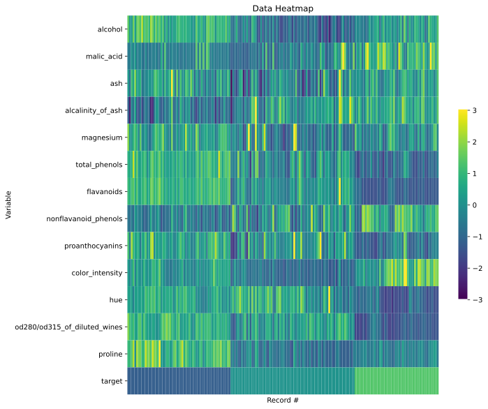

Data Heatmap¶
[1]:
import pandas as pd
from data_describe import data_heatmap
[2]:
from sklearn.datasets import load_wine
data = load_wine()
df = pd.DataFrame(data.data, columns=list(data.feature_names))
df['target'] = data.target
Basic heatmap¶
[3]:
data_heatmap(df)
<AxesSubplot:title={'center':'Data Heatmap'}, xlabel='Record #', ylabel='Variable'>
[3]:
Heatmap Widget showing standardized values.

Missing values only¶
[4]:
# Create missing values
df['hue'] = df['hue'].map(lambda x: None if x < 1.05 else x)
df['magnesium'] = df['magnesium'].map(lambda x: None if x%2 ==0 else x)
[5]:
data_heatmap(df, missing=True)
<AxesSubplot:title={'center':'Data Heatmap'}, xlabel='Record #', ylabel='Variable'>
[5]:
Heatmap Widget showing missing values.

Interactive (Plotly)¶
[6]:
data_heatmap(df, viz_backend="plotly")
<AxesSubplot:title={'center':'Data Heatmap'}, xlabel='Record #', ylabel='Variable'>
[6]:
Heatmap Widget showing standardized values.

[7]:
data_heatmap(df, viz_backend="plotly", missing=True)
<AxesSubplot:title={'center':'Data Heatmap'}, xlabel='Record #', ylabel='Variable'>
[7]:
Heatmap Widget showing missing values.